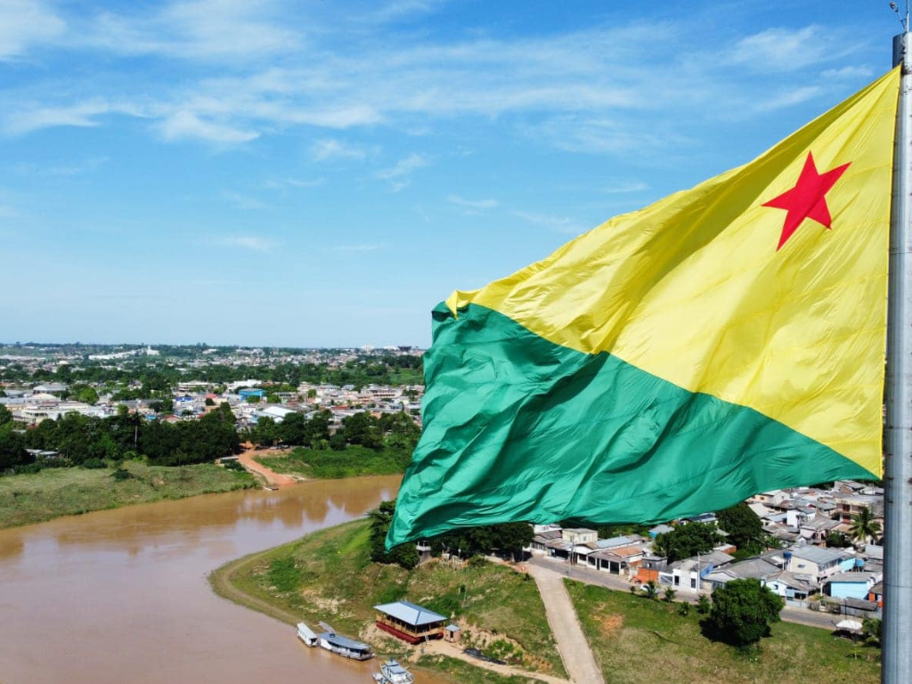

O Acre, localizado no extremo oeste da Região Norte, é um estado marcado por uma história única de anexação ao Brasil e por sua forte identidade ligada ao extrativismo da borracha. Coberto quase totalmente pela Floresta Amazônica, o estado é símbolo da luta ambiental, tendo em Chico Mendes uma figura histórica central para a criação das reservas extrativistas. Com uma população que preserva tradições amazônicas e fronteiriças, sua capital, Rio Branco, serve como o principal centro econômico de uma região que hoje busca equilibrar o desenvolvimento sustentável com a valorização de suas raízes indígenas e seringueiras
